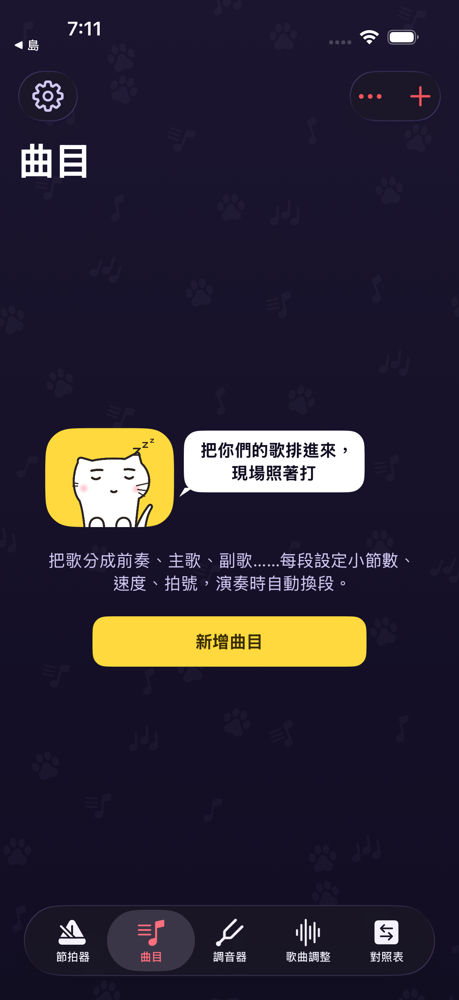
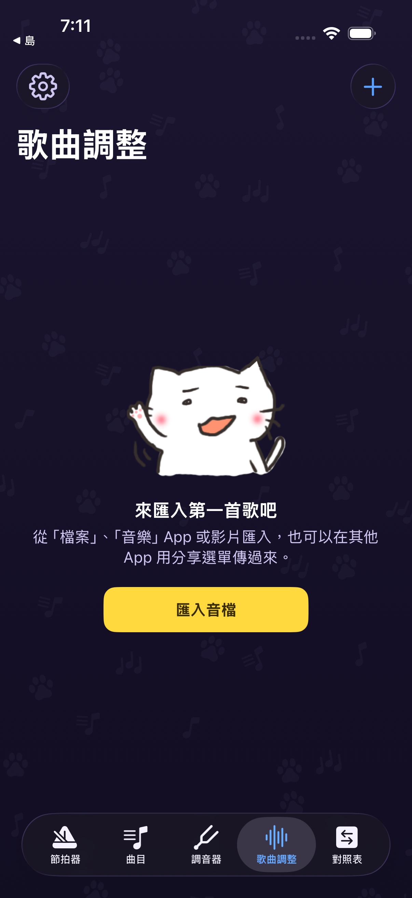
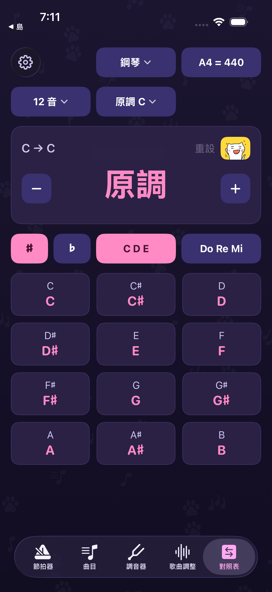

01
從 TestFlight 開始
先安裝 Apple TestFlight，再開啟公開邀請，依畫面加入測試與安裝。測試名額、相容裝置及版本以 TestFlight 顯示為準。
先把節奏踩穩，再一段一段練。節拍器、曲目與歌曲調整，陪你從獨奏走到一起練團。

先安裝 Apple TestFlight，再開啟公開邀請，依畫面加入測試與安裝。測試名額、相容裝置及版本以 TestFlight 顯示為準。
打開「節拍器」，調整 BPM 與拍號，先從自己能穩定跟上的速度開始。預備拍能幫你在正式開始前做好準備。
練節奏用「節拍器」；排整首歌用「曲目」；跟音檔練習用「歌曲調整」。音準與調性問題則到「調音器」和「對照表」。
這份指南介紹已發行測試版的基本操作，並非正式上架公告。不同測試版本的選項、限制與版面可能不同。
速度、拍號、拍型與重音各自調整，先把基本拍子聽清楚，再加入你需要的變化。
使用 6/8 等八分音符拍號時，BPM 以八分音符計；請依實際聽到的脈動調整。

把前奏、主歌、副歌整理成段落，每段設定自己的小節數、速度與拍號。
「曲目」保存的是段落與節奏安排；要匯入一段音訊，請到「歌曲調整」。

匯入你有權使用的練習音檔，調整速度或音高，再用 A–B 循環集中練習一段。
受保護的串流歌曲不一定能匯入。截圖為乾淨的初始畫面，未使用私人音檔，也未把音訊匯出或去人聲列為本次已驗證項目。

查音名、音階與和弦，轉調時有個可回頭對照的地方。
進入「調音器」後允許麥克風，選擇自動偵測或指定弦，單獨彈奏一個音並觀察偏高、偏低與準音提示。A4 基準音請配合樂團的設定；參考音可輔助用耳朵對音。本次未做實際樂器音準驗收。
在各工具頁左上角開啟設定，可切換語言與查看說明。版本更新後若介面不同，先確認 TestFlight 的版本與「要測試的內容」，再依目前畫面操作。
「曲目」是段落、速度與拍號的編排；「歌曲調整」是匯入音訊後轉調、變速與循環播放。依練習目的選入口。
先檢查系統是否允許麥克風，並在較安靜的環境單獨彈奏一個音。測試版本與裝置可能影響偵測表現，持續異常時透過 TestFlight 回報。
先在裝置安裝 Google Drive，並在「檔案」App 的「瀏覽」啟用該位置，再從 App 匯入選單找到檔案。需要的雲端登入與權限依裝置提示完成。
在 TestFlight 選擇喵喵練團趣，使用「傳送 Beta 版意見回饋」。附上裝置型號、版本、重現步驟與安全截圖；送出前檢查是否包含私人歌單或個人資料。
不是。指南以 1.0-beta-6 的基本流程與真實畫面為基準；公開邀請頁不會完整顯示目前 build 編號。內購、進階功能與當前使用限制以你安裝的版本為準。
公開 TestFlight 邀請已於 2026-10-03 核對，顯示「喵喵練團趣」。截圖由 1.0-beta-6 對應程式在乾淨模擬器實際執行取得，保留原始介面；未使用真人帳號、私人音檔或未發行功能畫面。
本次核對操作入口與頁面呈現，未驗證真實裝置音訊表現、雲端檔案匯入、分享送達、購買或去人聲結果。